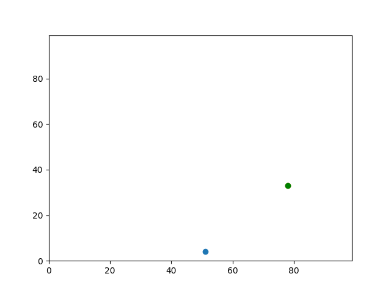
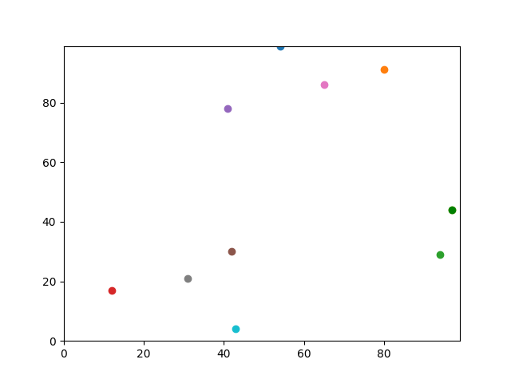
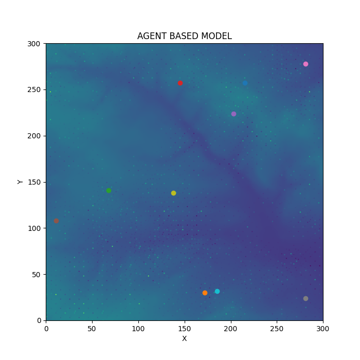
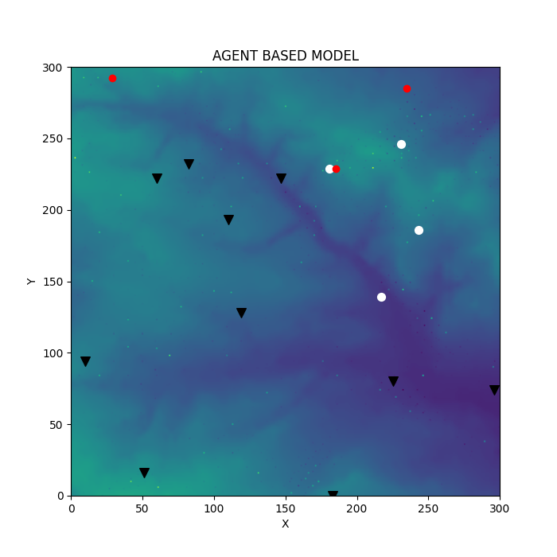
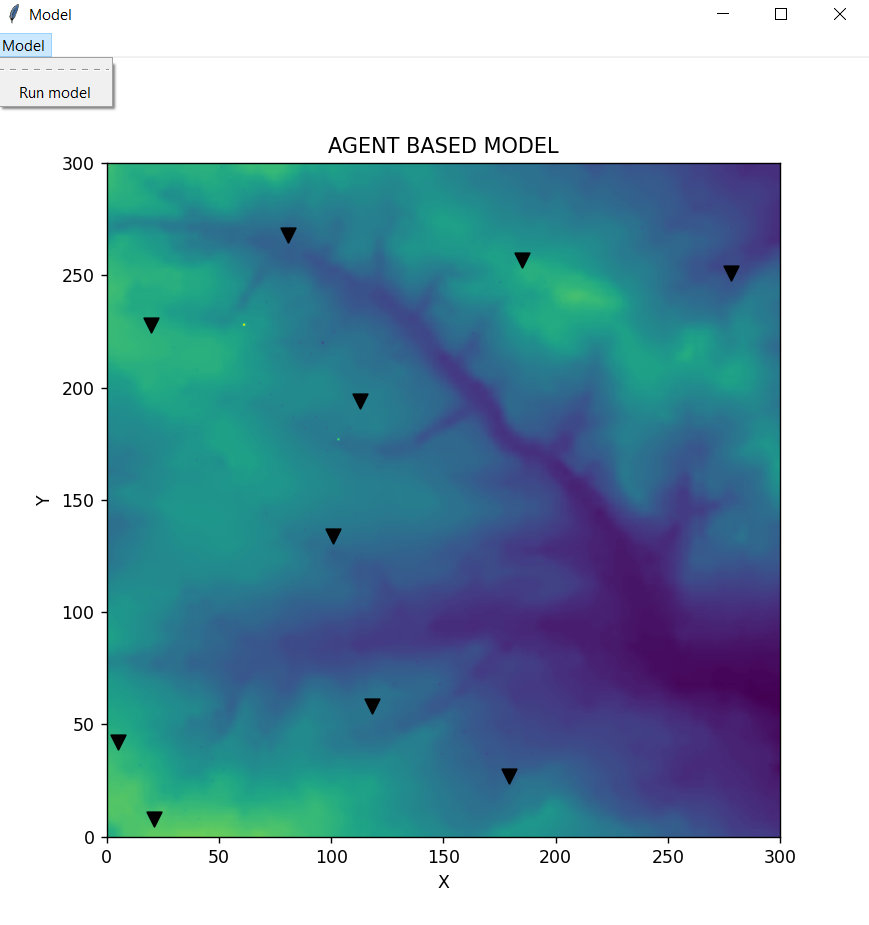

This is a portfolio as a part of assessment for the Programming for Social Sciences module, University of Leeds. There are 9 practicals which are designed to learn how to build simple Agent-based Model. The practicals flow starts from creating agents with their location to making them interact with environment and each other. It also gives introduction on plotting and animating agents and environment. In the end the way how to perform web scraping is given. More details on each practical are provided below.
To run the model:
1) Download/clone the Github repository
2) Open the terminal/command line and change the current directory to the directory of the repository
3) run python model.py [number of agents] [number of agents] [neighbourhood] [number of iterations]
In this practical, the two agents are created and their y and x coordinates are set. They both begin at the same spot and move forward using random numbers. The final step is to compute the distance between the agents.
CodeIn this practical, we shrink the code from practical 1 by introducing containers, namely lists. So, now the agents' coordinates pairs are stored in the individual list which form nested list of all agents - [[y0,x0], [y1,x1]].
CodeThe example of the expected output:
In this practical, we shrink the code from practical 2 by introducing control flow statement 'for'. We use it to create as many agents as we want (num_of_agents), and move them as many times as we like (num_of_iterations). Also, we show two solutions to address edge issues - the case when the agents move too far away. First solution is solid wall setting - when the agent moves too far it's coord-s are reset to min boundary/max boundary. Second solution is torus - if agents moves away at the top/right, it enters from bottom/left and the opposite.
CodeThe example of the expected output:
This practical gives example of how to build a function. We build function to calculate distance between agents. Then with the for-loop we find the maximum distance between a pair of agents from the list. Also we time the code to check how long it takes to run it.
CodeIn this practical, we create and move agents around as in the previous practicals. However we make the objects, our agents, by using our template - Agent class - that is stored in the agentframework module and move the agents around using the class method '.move()'. The class has variables - randomly initialized x and y coordinates. Using classes helps to produce clean and easy to maintain code and is useful to build complicated system.
CodeIn this practical, we perform the followings: 1) learn how to load data file - import raster data as our agents' environment; 2) let our created agents interact with it- move around it, eat and and store eaten from the environment - using the Agent class methods stored in agentframework(more details about the methods in agentframework.py) 3) we write out the changed environment to the file.
Code | Environment data | Resulting environment dataThe example of the expected output
In this practical, we perform the followings: 1) as in the previous practical we import raster data as our agents' environment and let our created agents interact with it-move around it, eat and and store eaten- using the Agent class methods stored in agentframework. 2) we let the agents communicate with each other and change each other variables using '.share_with_neighbours' method. This method looks for nearest neighbours of agent in specified distance from it and shares the food with them by splitting their total amount of food equally. More details of the method are given in the source code - agentframework.py 3) introduce artifacts concept - patterns or mistakes that result from the model's operation, not from how well it represents reality - and avoid them by randomizing the order=shuffling.
CodeIn this practical, we perform the followings: 1) we animate our model using matplotlib.animatiion 2) implement stopping condition based on how much the agent stores (the sheep has eaten) 2) further improve the model by adding Offspring class(inherits the functionalities of the Agent) and Wolf class with functionalities to interact with other objects
CodeThe example of the expected output (one frame):
In this practical, we build Graphical User Interface (GUI) for our model to display it with menu to run, and perform web scraping - request some data into it from the web.
Code | Resulting environment dataThe example of the expected output - GUI when stopping condition is met - all agents are eaten:
 MIT License
Copyright (c) 2022 mira7991
Permission is hereby granted, free of charge, to any person obtaining a copy
of this software and associated documentation files (the "Software"), to deal
in the Software without restriction, including without limitation the rights
to use, copy, modify, merge, publish, distribute, sublicense, and/or sell
copies of the Software, and to permit persons to whom the Software is
furnished to do so, subject to the following conditions:
The above copyright notice and this permission notice shall be included in all
copies or substantial portions of the Software.
THE SOFTWARE IS PROVIDED "AS IS", WITHOUT WARRANTY OF ANY KIND, EXPRESS OR
IMPLIED, INCLUDING BUT NOT LIMITED TO THE WARRANTIES OF MERCHANTABILITY,
FITNESS FOR A PARTICULAR PURPOSE AND NONINFRINGEMENT. IN NO EVENT SHALL THE
AUTHORS OR COPYRIGHT HOLDERS BE LIABLE FOR ANY CLAIM, DAMAGES OR OTHER
LIABILITY, WHETHER IN AN ACTION OF CONTRACT, TORT OR OTHERWISE, ARISING FROM,
OUT OF OR IN CONNECTION WITH THE SOFTWARE OR THE USE OR OTHER DEALINGS IN THE
SOFTWARE.